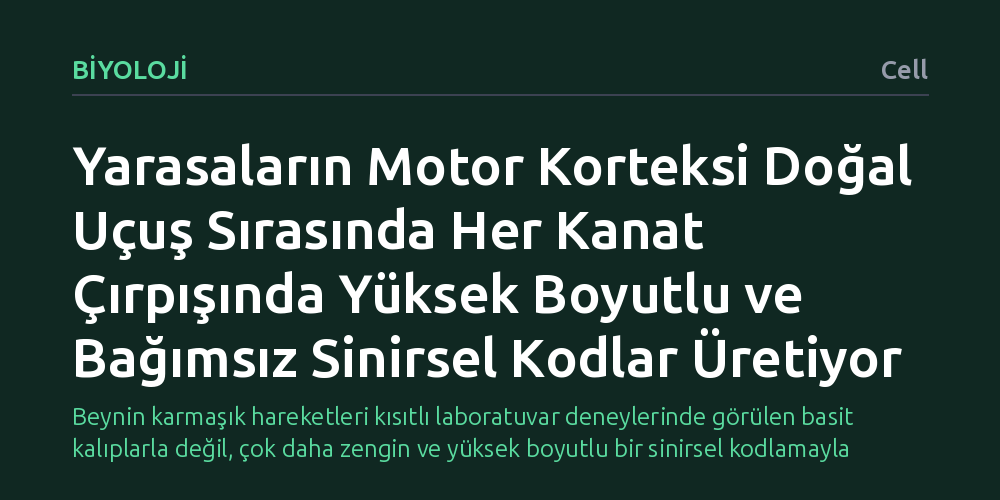

BIYOLOJI · Cell · 2026-10-14
Yarasaların doğal uçuşları sırasında motor kortekslerinin kanat hareketlerini nasıl kontrol ettiği incelendi. Beynin sanılanın aksine sadece kanat çırpış döngüsünü izlemediği, her çırpışta varyansı düşük, seyrek ve yüksek boyutlu özgün sinirsel durumlar ürettiği bulundu.
Beynin karmaşık hareketleri kısıtlı laboratuvar deneylerinde görülen basit kalıplarla değil, çok daha zengin ve yüksek boyutlu bir sinirsel kodlamayla yönettiğini gösterir.

Laboratuvar ortamında hayvanların hareketleri çoğunlukla kısıtlanır; kol çekme ya da buton basma gibi basitleştirilmiş ve tekrarlayan görevler yaptırılır. Bu tür deneylerde motor korteksin ürettiği sinyaller genellikle düşük boyutlu, yani birbirini tekrar eden temel kalıplar halinde görünür. Oysa doğal ortamda hareket etmek çok daha dinamik ve karmaşık bir süreçtir.
Yarasalar, el anatomisine benzeyen son derece esnek kanat yapılarıyla havada olağanüstü bir çeviklikle manevra yapar. Her kanat çırpışında milimetrik bir hassasiyet gerekir. Bilim insanlarının yanıt aradığı temel soru, böylesine kıvrak ve serbest bir uçuş sırasında beynin motor korteksinin kasları nasıl bir sinirsel stratejiyle kontrol ettiğidir.
Araştırmacılar, yarasaların kısıtlanmamış doğal uçuşları sırasında kanat hareketlerini kontrol eden motor korteks bölgesindeki nöron topluluklarının elektriksel aktivitelerini inceledi. Hayvanların havada serbestçe kanat çırptığı bu süreçte, her bir çırpış döngüsü hassas şekilde kaydedildi.
Elde edilen sinirsel veriler, nöronların kanat çırpış döngüleri boyunca birbirleriyle nasıl bir koordinasyon içinde çalıştığını ve çırpışlar arasındaki sinyal benzerliklerini ortaya koymak amacıyla popülasyon düzeyinde gelişmiş hesaplamalı analizlerle incelendi.
Elde edilen bulgular, yaygın beklentinin aksine motor korteksin yalnızca periyodik kanat çırpış ritmini takip eden bir saat gibi çalışmadığını gösterdi. Sinir hücreleri, her kanat çırpışında ortak varyansı oldukça düşük, seyrek ve birbirinden belirgin şekilde ayrışan popülasyon durumları sergiledi.
Bu durum, motor korteksin yüksek boyutlu bir popülasyon kodu kullandığı anlamına geliyor. Nöronlar topluca aynı basit kalıbı tekrarlamak yerine, her çırpışta çok daha fazla bağımsız bilgiyi işleyerek kanatların her an değişen aerodinamik gereksinimlerine anlık ve özgün çözümler üretiyor.
Bu sonuçlar, beynin hareket kontrolüne dair uzun süredir kısıtlı laboratuvar deneylerine dayanılarak oluşturulan modellerin eksik olabileceğini düşündürüyor. Kısıtlı ortamlarda gözlenen düşük boyutlu sinirsel etkinlikler, beynin gerçek kapasitesinden ziyade verilen görevin sadeliğinden kaynaklanıyor olabilir.
Doğal ve serbest hareketlerin incelenmesi, canlıların çevreyle girdiği karmaşık etkileşimlerde beynin nasıl esnek ve zengin çözümler ürettiğini anlamamızı sağlıyor. Yine de bu bulguların uçamayan diğer memelilerde ve insanlarda ne ölçüde geçerli olduğunu anlamak için daha kapsamlı çalışmalara ihtiyaç var.